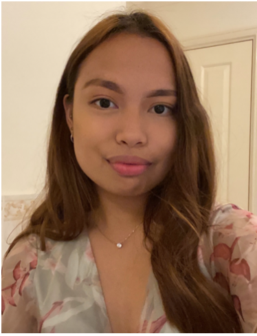
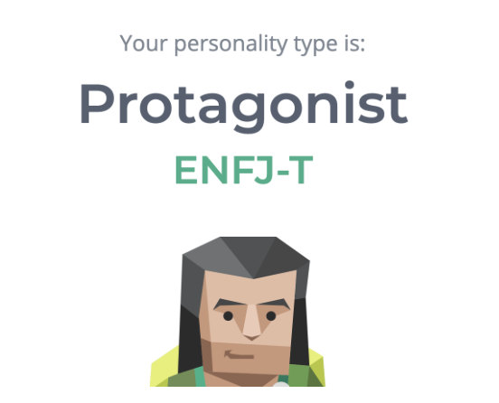
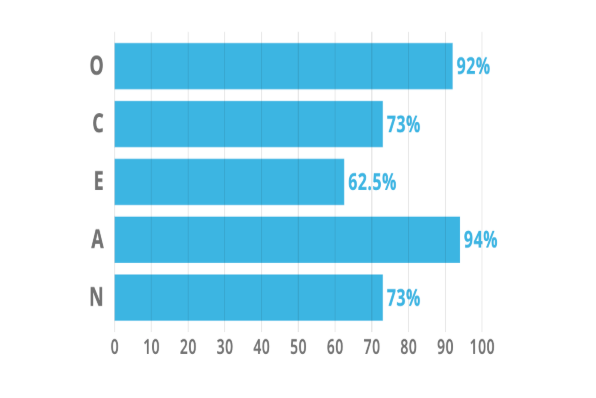
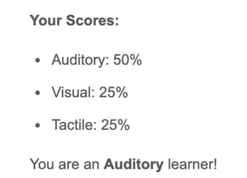

Aliyah's Profile
RMIT ID: s3858535
RMIT EMAIL: s3858535@student.rmit.edu.au
About Me
My name is Aliyah Deneve Gino. I was born in the Philippines and moved to Melbourne Australia in 2015. Before coming to Australia I lived in Singapore for 6 years and did my Primary School in Singapore. Back in Singapore I studied three languages Mandarin , Malay and French due to it being compulsory to study a language during primary school from Grade 1. But currently I'm only fluent in Tagalog, Bisaya (Filipino dialect) and English. During my free time I tend to play games, watch anime and/or watch TV shows especially Korean Drama, spend time with friends and/ or family and lastly listen to music and all this depends on my mood. I am currently studying 1st year in Bachelor of Information Technology at RMIT University. Trying to work through my interest in Computer Science or Data Science. So far my IT experience is Networking specifically in Cisco , Introduction to Computer Systems specifically in Linux, User-Centred Design ,Programming in Java and lastly html and CSS and this was back in year 10.
Personality Tests
  These test results show some of my personality traits. Through these tests it demonstrates that I am an open minded person who likes to hear out people for any issues or concerns they may have as well as a person with the extraverted, inuitive, feeling and judging personality traits. Being an auditory learner is a part of my personality as I learn through hearing and listening to anything whether it might be in class or just basic life. This also meant that I remember things that I have heard and store information by the way it sounds and I have easier time understanding spoken instructions than written ones, My personality traits demonstrate how I behave in a team as being an open minded person who likes to hear people with any issues or concern they might have and being able to store information by hearing and listening.
Ideal Job
My ideal job would be either a Data Analyst or Software Developer. The skills required are:
- Bachelor Degree in Computer Science, statistics, econometrics, physic or a related quantitative field
- Strong proficiency in Python, SQL
- Deep statistical skills such as utilized in A/B testing, analyzing observational data and modeling
- Experience writing software in a professional environment
- Experience building data visualisations
- Experience with data science tools such as Pandas, Numpy, R, Matlab, octave
- Experience in devops, i.e. Linux, Ansible, Docker, Kubernetes